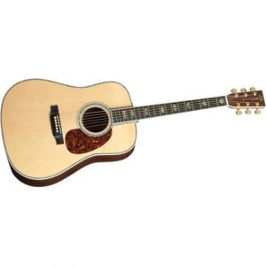

La guitarra eléctrica tiene su antecesor en la guitarra clásica, y su historia común se puede consultar en el apartado de historia de la guitarra. Esa historia nos guía hasta el siglo XX donde nos encontramos con un amplio desarrollo tecnológico e industrial y con la aparición de nuevas tendencias musicales como el jazz y el blues que hicieron desarrollar el instrumento para adaptarse a las nuevas necesidades del siglo XX.
Con la aparición de los nuevos estilos musicales y las Big Bangs, se hizo necesario ampliar el volumen de las guitarras, y en 1925 John Dopyera, el fundador de la DOBRO (Dopyera Brothers) diseñó una guitarra con la caja de metal e insertó en su interior unos conos resonadores. El sonido de estas guitarras era amplificado por los conos, y no por la caja de resonancia, lo que le proporcionaba un sonido potente y más metálico que la popularizó para el blues, pero no para otros estilos.
Por aquella época, las guitarras tradicionales también trataron de adaptarse a las nuevas tendencias musicales y para tratar de ampliar el sonido se cambiaron las cuerdas de tripa tradicionales por cuerdas de acero. Para resistir la tensión de las nuevas cuerdas de acero, las guitarras tradicionales tuvieron que evolucionar aumentando sus refuerzos internos, reforzando el mástil y ampliando la caja de resonancia, dando paso así al nacimiento de la guitarra acústica tal y como la conocemos. En los años treinta este tipo de guitarra fue popularizada por Martin con su modelo Dreadnought.
La guitarra de Dopyera y las guitarras de cuerdas de acero aumentaron el volumen de la guitarra, pero no lo suficiente, así que se empezó a investigar la posible amplificación del volumen sonoro mediante amplificación electrónica. El hecho de intentar amplificar el sonido poniendo un micrófono delante de la guitarra no funcionaba al tocar en grupo ya que el micrófono amplificaba al resto de instrumentos al igual que la guitarra. Así que se empezó a investigar con pastillas electromagnéticas.
Una pastilla electromagnética consiste en un imán con un hilo de cobre enrollado en forma de bobina. Cuando la cuerda de acero vibran cerca de la bobina de la pastilla se induce electricidad que posteriormente conectada a un amplificador se transforma en ondas sonoras.
La primera pastilla electromagnética para guitarra fue incorporada por la marca Rickenbacker en 1931 mediante un imán de acero y tungsteno. La moda de las pastillas para guitarras se extendió tanto que llego hasta los hermanos Dopyera, que en 1932 incorporaron pastillas magnéticas en sus famosas guitarras resonadoras.
Las investigaciones con estos tipos de pastillas fueron muy productivas, pero producían feedback o reverberación con el hueco de la propia caja de resonancia. Esto llevó a reemplazar el cuerpo hueco de la guitarra por un cuerpo sólido aunque en la actualidad todavía podemos encontrar guitarras eléctricas de cuerpo semihueco destinadas en su mayoría a guitarristas de jazz.
Sobre quien fue el primero en incorporar o inventar las guitarras con cuerpo sólido encontramos varias teorías, unos hablan del modelo de Rickenbacker, otros mencionan a Les Paul con su The Log y, por último, otras apuntan al músico independiente Paul Bigsby. Sea como sea, las ideas de los ingeniosos innovadores antes mencionados dieron lugar a la era de la guitarra eléctrica, en la forma en que actualmente la conocemos y por tanto al nacimiento otros estilos musicales como el rock’n’roll, por poner un ejemplo.
La idea de los anteriores fue aprovechada por Leo Fender para convertirse en el pionero de la producción masiva de guitarras de cuerpo sólido. En 1948, hizo la primera fabricación en serie con la Broadcaster (Telecaster desde 1952) y llegó a ganarse el apelativo del Henry Ford de la guitarra eléctrica. Aunque esta producción y este modelo fue considerado por la competencia como demasiado sencillo ya que obviamente las guitarras no se construían de manera artesanal.
El caso es que Fender tuvo una grandísima aceptación entre la población y su producción a continuado fructíferamente desde su inicio (por los años cincuenta) hasta la actualidad.